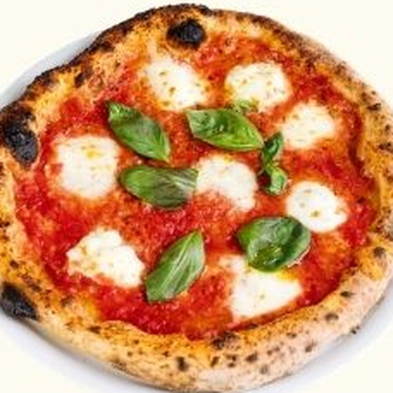
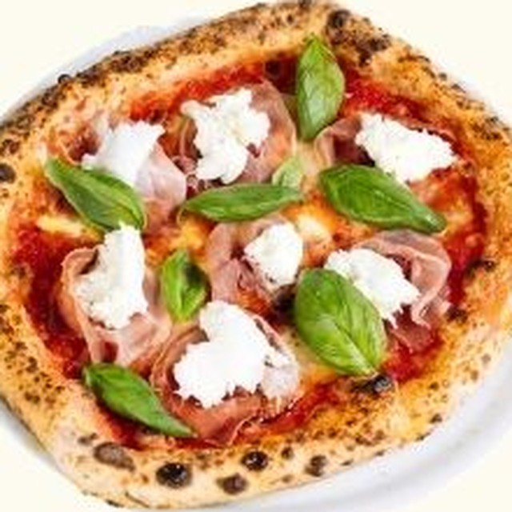
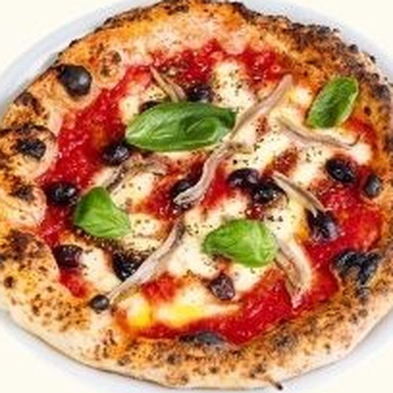

At the heart of every pizza is Samuele’s passion: the dough. Combining elements of traditional Napoletana and contemporanea pizza-making, he continually experiments with flour, fermentation and hydration to create his perfect dough.Curious? Ask Samuele what flour and hydration he’s using today.
Classic
Level up
Go all in
Margherita22
San Marzano tomato, Napoli-cut fior di latte, basil & EVOO

Bufalina26
+ Buffalo mozzarella

Prosciutto30
+ Prosciutto & buffalo mozzarella
Marinara18
San Marzano tomato, oregano & garlic oil
photo to come
Acchugina20
+ Anchovies

Napoletana25
+ Anchovies, olives & mozzarella
Salsiccia e Patate28
Creamy base of Napoli-cut fior di latte, salsiccia & herb-roasted potatoes
photo to come
Fungaiola29
+ Mushroom
photo to come
Sotto BoscoXX
+ Mushroom & ‘Flavour Bomb’ truffle cheddar
La Porcona Rossa30
San Marzano tomato, mozzarella, salsiccia, ham & salame